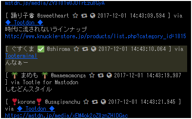

「ナナチ」
この記事はmstdn.jp Advent Calendar 2017 7日目の記事として投稿しています。
どうも、mstdn.jpではナナチの人で遊ばせてもらってるぐすくまです。
jpのアドベントカレンダー、書くならこれしかないでしょ。ということで、ナナチネタで書かせてもらおうと思います。
mstdn.jpで時折発生する「んなぁー」トゥートについて
今年の10月中旬ごろから発生したミームです。
TLにいるユーザーの誰かが「んなぁー」とトゥートするのを発端として、他のユーザーがそれに合わせるように「んなぁー」とトゥートします。
「んなぁー」
「んなぁ～」
「んなぁ～」
「んなぁー」
「んあー」
みたいな。感じで。
もともとこれ以前にも、特定キーワードに対して共鳴するものとして、
にゃーん
こゃーん
きつね
などあり、それに新たに加わったものですかねぇ。
「んなぁーって何？」
具体的には、作品中の「ナナチ」というキャラの、口癖というか鳴き声というか。
まぁそんな感じのものです。
ナナチって何？ メイドインアビスって何？？？？
ナナチ！ナナチ！ナナチ！ナナチぃぃんなぁああああああああああああああああああああああん！！！
んなぁああああ…ああ…あっあっー！んなぁああああああ！！！ナナチナナチナナチぃんなぁわぁああああ！！！
んなぁクンカクンカ！クンカクンカ！スーハースーハー！スーハースーハー！いい匂いだなぁ…くんくん
んなぁっ！成れ果てナナチたんのシルバーの髪をクンカクンカしたいお！クンカクンカ！んなぁあ！！
間違えた！モフモフしたいお！モフモフ！モフモフ！髪髪モフモフ！カリカリモフモフ…きゅんきゅんきゅい！！
原作5巻のナナチたんかわいかったよぅ！！んなぁぁああ…あああ…あっあぁああああ！！ふぁぁあああんんっ！！
アニメ続編発表されて良かったねナナチたん！んなぁあああああ！かわいい！ナナチたん！かわいい！んなぁっああぁああ！
コミック6巻も発売されて嬉し…いやぁああああああ！！！にゃああああああああん！！ぎゃああああああああ！！
ぐあああああああああああ！！！コミックなんて現実じゃない！！！！あ…原作もアニメもよく考えたら…
ナ ナ チ ち ゃ ん は 現実 じ ゃ な い？にゃあああああああああああああん！！うぁああああああああああ！！
そんなぁああああああ！！いやぁぁぁあああああああああ！！んなぁああああああん！！ボンドルドぅぁああああ！！
この！ちきしょー！やめてやる！！現実なんかやめ…て…え！？見…てる？表紙絵のナナチちゃんが僕を見てる？
表紙絵のナナチちゃんが僕を見てるぞ！ナナチちゃんが僕を見てるぞ！ワンポイントナナチちゃんが僕を見てるぞ！！
アニメのナナチちゃんが僕に話しかけてるぞ！！！よかった…世の中まだまだ捨てたモンじゃないんだねっ！
いやっほぉおおおおおおお！！！僕にはナナチちゃんがいる！！やったよミーティ！！ひとりでできるもん！！！
あ、コミックのナナチちゃああああああああああああああん！！んなぁあああああああああああああああ！！！！
あっあんああっああんあオーゼン様ぁあ！！レ、レグゥー！！マルルクぅぁああああああ！！！リコｫぁあああ！！
んなぁっうぅうう！！俺の想いよナナチへ届け！！深界四層のナナチへ届け！
つくしあきひと先生原作の漫画「メイドインアビス」に登場する主要メンバーの一人です。
メイドインアビスは、世界の果てにある孤島にあいた大穴「アビス」の中で少年少女が冒険を繰り広げる王道モノのファンタジー物語です。
ナナチはその冒険のさなかに出会う、獣人の姿をした子供です。
詳しくはアニメ公式ページを見てね！
原作を読みたい人はWebコミックも配信されてるよ！
(最初の数話と最新話のみ)
メイドインアビス / つくしあきひと / まんがライフWIN
mstdn.jpで流行ったきっかけ
何となく勝手に「んなぁー」してたら「んなぁー」し返してくれる人がいたから、ふぁぼってブーストしてたら、だんだん「んなぁー」する人が増えていった。って感じじゃないですか？？？？？？？
皆さんポコポコされるのが好きですね！
それと積極的にダイレクトマーケティングを実施したおかげですね！！！！
↓↓↓ 露骨なダイマの例１ ↓↓↓
↓↓↓ 露骨なダイマの例２ ↓↓↓
こんな感じで、親切丁寧に、紹介してたら
「Amazonプライムビデオで見れるのかー」
「見てみた！ 面白かった！」
「思ってたよりもグロいシーン多かった」
「ナナチかわいい」
「んなぁー」
などの賛辞をいただきました！
mstdn.jpで流行ったきっかけ、その２
ついでなんで「「「 宣 伝 」」」良いですか！？
仕事中諸事情でLTLを見れないときにも反応できるように、Tooterminalのaccess-list設定に「んなぁ」を設定して通知出るようにしてました！

んなぁーだけ強調されてるので、見落としません！
一時期botに勘違いされたこともあったけど、こういうセコい手を使ってます！！！！
『『『『『 「 T o o t e r m i n a l 」 っ て 何 ぞ ？ ？ ？ ？ ？ 』』』』』
と言う人は、僕が今日書いたもう一つのアドベントカレンダー記事の「Tooterminalのススメ」も読んでね！！！！
リアルタイム監視をするのにとても向いているWebクライアントだよ！
新たな深層「abyss.fun」へ
abyss.fun立ち上げたのは、正直ノリと勢いだけでした。
～～～ 唐突な回想 ～～～
僕（業務中）「する事ねーなぁー…(ポチポチ)」
僕（業務中）「なんか面白いドメインねーかなぁー…(お名前.comポチポチ)」
僕（業務中）「うお！ abyss.fun 取れるやんけ！ しかも200円！ 安っ！」
僕（””業務中””）「確保ー！！！！！(ポチー！)」
～～～ 回想終わり ～～～
と、ドメインを確保したのが、11/15のこと。
そっからVPSの間借りしてインスタンスの立て方をtootsuiteのドキュメント見つつこれまたノリと勢いだけで鯖を構築し、
ザボテクで半分死にかけてきた奈落文字変換機能を移植してきて、
リリースしたのが11/19の昼頃のこと。
インスタンスを新しく立てたいと思った人は参考にしてみてください。基本的なLinuxコマンドやRuby等の知識があれば大体3-4日あれば立てることができます。
(さくらのクラウドのスタートアップスクリプトを使えば一瞬だけど！！！！ 有志が作ったさくらのVPS用ワンライナーもあるけどな！！！！！)
で、
奈落文字が使えるインスタンス、新たな深層「abyss.fun」へ - ITmedia NEWS
早速mazzo氏にも取り上げてもらいました！
Tooterminalの時もそうでしたが、いつもいつもありがとうございます！
で、
一時のノリとはいえ、せっかくいい感じの鯖立てたし記事にもしてもらったし、ということで、ちょっと人集めを頑張ってみようかな。
と思っている所存です。
目標はますとどんちほーかな。
常にアクティブユーザーがいて、数分に1度くらいはトゥートされるような。そのくらいの流速が好ましい。
まずは、ユーザー数を増やすところから、もう半月運営してるインスタンスだけど、これからも地道に頑張って増やしたいと思います。
ためになるような話をしていない気がしてきたので
ここから真面目な話をします。
興味のない人はこちらからスキップ
マストドンの話
自分は4月のブーム辺りからマストドンのいくつかのインスタンスでいろいろ遊ばせてもらってます。
当初から一貫して考えていることですが、「どのくらい盛り上がって、どこまで続くか見てみたい」というところです。
もう既に8カ月たちました、いろいろな人が現れ、出会い、別れ、他のインスタンスやTwitterに引っ越す人がいれば留まる人もいて、全然飽きることがありませんでした。
mstdn.jp、ひいてはマストドン全体として、今後どのようになるでしょうか。
個別インスタンスの話
アクティブユーザーが1000人/日以上いる大手インスタンスから、全登録ユーザ数が1-2桁程度の小規模インスタンスまでさまざまありますが、いつまでも盛り上がり続ける事が出来るかと言われると当然無理なことです。
例えば、有名なコピペで「コミュニティの一生」というのがあります。
【コミュニティの一生】
面白い人が面白いことをする
↓
面白いから凡人が集まってくる
↓
住み着いた凡人が居場所を守るために主張し始める
↓
面白い人が見切りをつけて居なくなる
↓
残った凡人が面白くないことをする
↓
面白くないので皆居なくなる
小規模なインスタンスにおいては、このコピペの流れが痛いほど突き刺さるのではないでしょうか。
インスタンスを活性化させるために、いろいろと催してみたり、ルールを作ってみたりと対策をされていると思います。
一方で、mstdn.jpやfriends.nicoなどの規模が大きいインスタンスは上記コピペの影響を受けにくいですが、大規模インスタンスならではの別の問題に直面すると思います。
mstdn.jpを眺めていると、一部ユーザーが「Twitterじみてきた」のような発言をしているのを見ることがまれにあります。
どの程度マストドンを使われている方か分からないので、どこがTwitter化しているのか具体的に説明してほしいと思う点ではありまが、現在のmstdn.jpに身を置いている１ユーザーとして、今後の大規模インスタンスがTwitterと似たような評価をされるような自体にはなってほしくないとも思っています。
アメリカの社会生物学者レベッカ・コスタは「認知域」という概念を提唱しています。
- 反対はするが対策はない
- 個人に責任を転嫁して問題を解決したと酔いしれる
- 怪しげな因果関係に飛びつく
- 物事の原因が不明でも何か一つにこじつける
- 緩和策や応急処置に満足し根本問題を先送りする
- 問題を細分化してより複雑にしてしまう
- 行き過ぎた経済偏重行動をとる
これらの認知域を定義した項目は、よく現代日本社会にあてはめられたりしますが、Twitterひいては大規模インスタンスにも当てはめることが出来る内容です。
この問題の解決策として、大胆な「ひらめき」が必要であるとレベッカ・コスタは提示しています。
この「ひらめき」は、小規模インスタンスの直面する「コミュニティの一生」問題にも通じるものがあるでしょう。
インスタンス運営における「ひらめき」とは、今ある秩序を壊し過ぎないまま、如何にして雰囲気を作り替えることが出来るかが鍵になってきます。
運営者が出来ることでいえば、たとえば新しい独自機能を実装してみる、インスタンス内の独自文化・ミームを作ってみる。などがあります。
機能追加については運営者個人でも出来ないことはないと思いますが、独自文化を作り上げるにはインスタンス所属ユーザーに頼るほかありません。
ここは僕も試行錯誤中なので偉そうなことを書くことが出来ません。今はとりあえず以下の3つをベースにした考えの下で行動しています。
- 宣伝・広報（他インスタンスへの宣伝、Twitterでの広報活動）
- しんかこ（マストドンの操作方法解説bot設置、雰囲気を理解してもらうためのファーストインパクト）
- 既存TLの維持（LTLを止めない努力）
またいずれ、良い成果が出たらここかどこかにレポートを書くかもしれません。今後ともよろしくお願いします。
マストドン全体の話
全体を見渡すと、おそらくマストドンというシステムがつぶれることは暫く(数年単位)はまずないでしょう。
この手の話題がLTLに上がると決まって似たような理由が挙げられるので、耳たこかもしれませんが…
- マストドンはAGPLのフリーなライセンスで公開されているOSSである。
- 技術者(特に日本人)が積極的に開発に参加しており、企業支援もある。
- 公式ドキュメントがよく整備されており、スタートアップスクリプトを提供しているサービスも存在することから、新規インスタンス構築に対する負担が比較的少ない。
- Discource等の技術者が参照しやすい支援コミュニティ
技術的な面は今後も改善改良が続けられる限り、すぐに廃れることはないでしょう。
「評価経済社会」を基にマストドンを考える
ちょっと視点を変えて、ユーザー主体の視点からも考えてみようと思います。
マストドンは全体的に小規模なコミュニティで形成されたSNSです。
たとえ大規模インスタンスであろうと、やはり固定された数人で集まっている印象が強く感じられます。
その小さなコミュニティの中で、多少なりともヒエラルキーは出来上がっています。
分かりやすいところでいえば、小規模インスタンスに言えることですが、やはりサーバー管理者が中心になっています。
そのような小さいコミュニティでも、オフ会の実施やサーバー維持費の貢献など、色々な経済が回っている事例が多数あります。
このように、一部のアイドル的ユーザーの活動に対して周囲の人間が還元する構図の社会構造を、評価経済社会と呼ぶことがあります。
評価経済社会とは、岡田斗司夫氏が提唱している、今後訪れるであろう社会形態の一つとしているものです。
詳しくは書籍もしくはネットのレビューなどを読んでいただくとして、どういうものが評価経済社会かざっくりと説明すると、以下のような考え方です。
- 今までの貨幣を重要視して回っていた貨幣経済社会ではなく、評価を重要視して回る社会である。
- 評価を得るには、「自分の気持ち」にいかに影響を与えるかが重要になってくる。
- 他人の評価を集めた人が見返りを得て、豊かになっていく社会
現在のマストドンは、一部の人気ユーザーに評価が集まる、小さな評価経済社会が構成されていると思います。
mstdn.jpやfriends.nico等の大手インスタンスは複数人の評価される人が存在し、小規模インスタンスにおいては主にサーバー管理者が評価を集めている状況となっています。
集まった評価は、オフ会開催の原動力となったり、サーバー維持費を募ったりする際に還元されています。
LTL文化が根強いまま存在し続けるであろうマストドンというプラットフォームは、この評価経済社会という観点においては良くも悪くも最も適しているSNSでしょう。
真面目な話ここまで
とりあえず自分で面白いと思うようなことを、適当にやってればダイマも成功するんじゃないですか～？？？？？
自分なんかは自虐ネタを織り交ぜつつ日ごろのトゥートをしつつ、他人にこういう絡み方したら喜んでもらえそうだなぁ～みたいなことを考えながらマストドンで空リプしまくったりふぁぼったり。
良く分からんけどそんな感じのことを普段やってる気がする。
で、普通にコミュニケーションしつつ相手の印象良くしてからの
「 宣 伝 良 い ？ 」
ですね。
これでどれだけ乗ってくれるかはわからんけど、少なくともこれで「んなぁー」は成功した感じある。
終わり
今日分のアドベントカレンダー終わりです。
。。。建設的な話これくらいしかできないけどいい？？？
何か聞きたいことがあったらmstdn.jpのアカウントかabyss.funのアカウントの方に投げてね！
sarahahの方に投げてもらってもいいけど、後から遡れなくなっても知らないよ！
真面目な話だけを期待していた人、冗談だけの記事だと思い込んでいた人、いろいろとトラップを仕込んでしまってごめんなさいって感じする。
気にしてないけど。
ともあれ、とりあえず今の自分の考えはだいたいこんな感じです。
文字数を見てみたら約1万文字。原稿用紙で25枚分！長い！！！！
でもトゥート数にしたら20トゥート分。それほど長くない気がする不思議。
明日はナツキ担当です！
マストポータル、ポケモンインスタンス、アズレンインスタンスなど、多数のサーバー運営をしている実力者です！どんな素晴らしい記事を書いてくれるのか、楽しみですねぇっ!
最後にもう一度いい？？？？？？